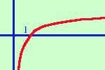
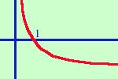

Grafico della funzione logaritmica
Dobbiamo distinguere due casi:
- la base del logaritmo e' maggiore di uno
- la base dal logaritmo e' compresa fra zero ed uno
(in senso lato, cioe' senza gli estremi)

la base del logaritmo e' maggiore di uno:
allora, qualunque
sia la base,
y = log x
ha le seguenti caratteristiche:
- la funzione e' sempre crescente
- e' definita solo per valori positivi della x
-
ha un asintoto verticale nell'asse y in cui la curva tende a
-

-
il punto 1,0 e' sempre di intersezione fra la curva e l'asse delle x
-
all'aumentare delle x oltre il punto 1
la curva cresce molto lentamente

la base del logaritmo e' minore di 1 e maggiore di 0:
allora, qualunque
sia la base in questo intervallo,
y = log x
ha le seguenti caratteristiche:
- la funzione e' sempre decrescente
- e' definita solo per valori positivi della x
-
ha un asintoto verticale nell'asse y in cui la curva tende a
+
-
il punto 1,0 e' sempre di intersezione fra la curva e l'asse delle x
-
all'aumentare delle x oltre il punto 1
la curva diminuisce molto lentamente
il caso della base minore di zero e' un caso
trattato molto raramente, in quanto di solito
si lavora con logaritmi a base e;
pero' e' sempre meglio essere
previdenti...
|